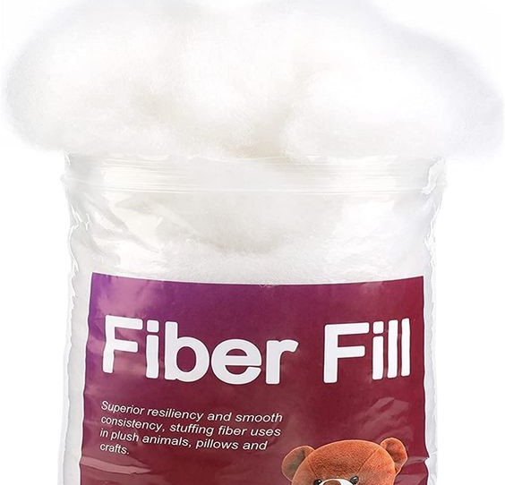

Chenille Yarn
Soft and plush yarn with a velvety texture, perfect for creating cozy blankets, plush toys, and luxurious accessories.
Price: ₱64
Reviews: ★★★★★ (5/5)
Cotton Yarn 5ply
Smooth and durable yarn made from 100% cotton, ideal for making lightweight garments, dishcloths, and summer accessories.
Price: ₱24
Reviews: ★★★★★ (5/5)
Cotton Yarn 4ply
Versatile and breathable yarn crafted from 100% cotton, suitable for creating a wide range of projects including baby items, home decor, and washcloths.
Price: ₱22
Reviews: ★★★ (3/5)
Stitch Marker
Handy tool used to mark stitches and keep track of pattern repeats while crocheting or knitting, ensuring precise and accurate results.
Price: ₱5
Reviews: ★★★★★ (5/5)
Crochet Hook
Essential tool for crocheting, available in various sizes and materials such as aluminum, plastic, and ergonomic designs to suit different projects and preferences.
Price: ₱34
Reviews: ★★★★ (4/5)
Fiber Fill Cotton
Soft and resilient stuffing material made from 100% cotton, perfect for adding volume and shape to amigurumi toys, pillows, and other stuffed creations.
Price: ₱100
Reviews: ★★★★★ (5/5)
Weaving Needle
Needle with a large eye and blunt tip, used for weaving in yarn ends and sewing crochet or knitting pieces together to finish projects neatly.
Price: ₱5
Reviews: ★★★★ (4/5)
Thread Scissors
Small and sharp scissors designed for cutting yarn and thread with precision, making them an essential tool for trimming ends and completing projects with ease.
Price: ₱30
Reviews: ★★★★★ (5/5)
Knit Counter
Handy accessory for keeping track of rows and stitch counts in knitting projects, helping to prevent mistakes and ensure even shaping and sizing.
Price: ₱4
Reviews: ★★★ (3/5)
Safety Eyes
Plastic or metal eyes with a locking washer, used to add a playful and realistic touch to amigurumi toys and other crocheted creations, ensuring they are safe for children to play with.
Price: ₱20
Reviews: ★★★★ (4/5)